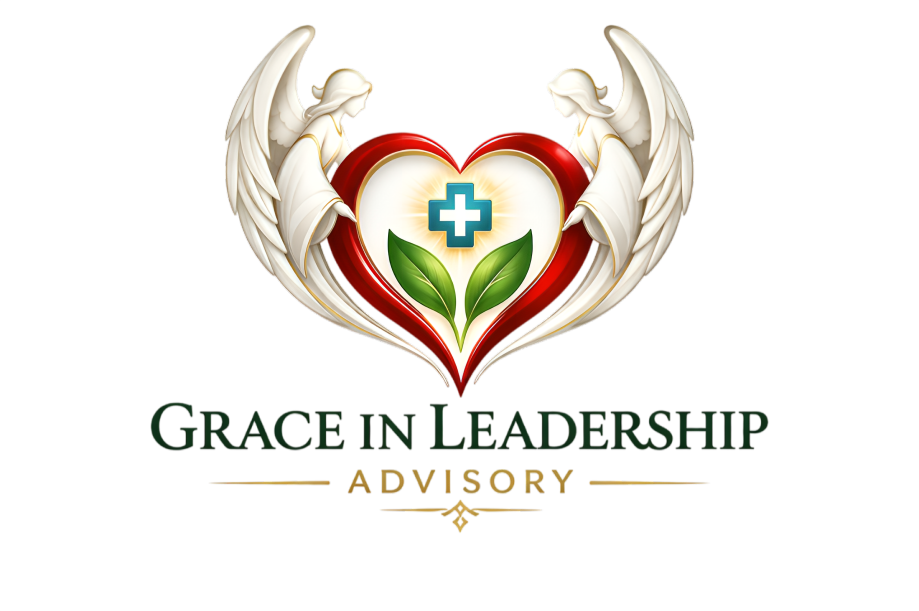

We help healthcare systems identify and recover millions of dollars in hidden operational waste while strengthening patient care, workforce sustainability, and system performance.

Across large healthcare systems, this level of operational waste often exists within everyday
workflows, hidden in fragmented processes, variation, and system blind spots.
These inefficiencies are difficult to see without a trained lens. Our team is built to identify what
others overlook and convert that waste into measurable patient care value.
We apply Lean principles organically, rooted in frontline reality, not textbook frameworks. Every workflow is examined for hidden loss, variation, and misalignment between intention and outcome.
With clinical precision, we map the true cost of fragmentation, from medication inefficiencies to care delivery gaps. We surface what accounting systems cannot see.
Strategy without aligned leadership is strategy on paper. We bring vision, operations, and frontline execution into a single coherent direction so change actually sticks.
"Nothing in life should be wasted… true success is measured by how much we serve others."
— Leby's Grandfather · The Principle That Guides Our Work
External perspective only
Generalized frameworks
Recommendations without ownership
Built from frontline experience
Tailored to each system
Implementation embedded in reality
Change imposed from above
Metrics over mission
Engagement ends at report
Change shaped by those who do the work
Mission aligned with metrics
Partnership through transformation
Unlike traditional consulting models, our team is composed of healthcare professionals who have worked inside hospitals, pharmacies, and care delivery environments across frontline and leadership roles.
We understand not only what needs to change, but how to make change work within real healthcare environments, where culture, workflow, and human dynamics are as important as process diagrams.
This is not consulting. This is a mission.
— Grace in Leadership Advisory
Leby Varghese grew up in Kerala, South India, in a culture that deeply values compassion, discipline, and stewardship of resources. From an early age, she was known for her natural inclination to help others and her respect for the responsible use of what is given.
After arriving in the United States, Leby was struck by the level of waste that can exist within complex systems and recognized that this challenge was even more significant within healthcare. Hospitals filled with dedicated professionals, yet system complexity and misalignment quietly eroding the value of every resource.
In 2025, Leby completed her Master of Healthcare Administration (MHA), deepening her understanding that healthcare's challenges are not due to lack of effort but due to misalignment within systems.
"Nothing in life should be wasted… true success is measured by how much we serve others."— Leby's Grandfather · The Philosophy That Guides Our Work
Pharmacist turned healthcare operations strategist. Her career spans frontline clinical care and healthcare administration, giving her a rare lens that sees both the human and systemic dimensions of waste.
We believe leadership is not defined by title. It is a responsibility and a potential within every individual. Every healthcare professional has the capacity to lead, especially those driven by compassion, excellence, and a desire to serve others.
We identify hidden operational waste across medication management, care workflows, and support functions, and build structured recovery pathways that redirect value to patient care.
Rooted in real healthcare environments, not theory. We redesign processes by working alongside the people who perform them, ensuring new flows are adopted, not just approved.
We work with healthcare systems to cultivate compassionate, purpose-driven leadership at every level. Our focus is not just developing individual leaders but creating systems where leadership is consistently practiced across teams.
Sustainable healthcare transformation requires workforce systems that support clinicians as much as patients. We build environments where professionals can practice at their highest potential.
We create alignment between leadership vision, operational processes, and frontline execution, ensuring your strategy translates to measurable patient and financial outcomes.
When leadership, operations, and frontline insight move in the same direction, the impact extends beyond financial performance. It improves patient care, supports clinicians, and ensures that healthcare systems can serve communities for generations to come.
The opportunity already exists within your system. We help you unlock it.
"Leby brought a perspective we had never encountered before — someone who understood both the clinical floor and the boardroom. Within months, our pharmacy workflow inefficiencies were visible, quantified, and on their way to being solved."
"This is not a consulting firm that hands you a report and disappears. Grace in Leadership stayed with us through implementation, through resistance, through real change. That is rare — and it made all the difference."
"Our leadership team was misaligned for years — different priorities, different languages, different definitions of success. Leby's work helped us find a common direction. Staff morale improved noticeably within the first quarter."
If your organization is ready to uncover hidden opportunities, reduce operational waste, and strengthen system performance, we welcome the opportunity to engage.